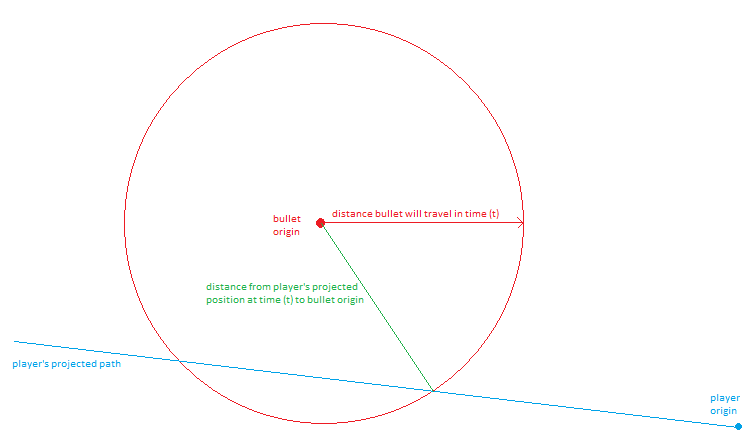
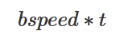
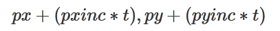
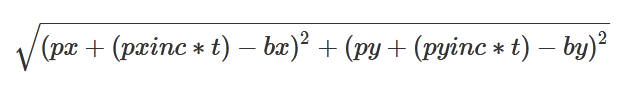
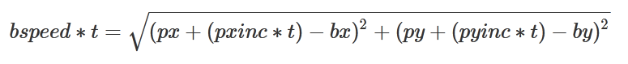

Purple Martians
Technical Code Descriptions
Shots
Original Method
New Method
Inputs and Outputs
High Level Method
My Brute Force Method
Conclusion
The Better Solution
Original Method
When an enemy shoots a the player, the shot was aimed exactly at the players current position.
void old_fire_enemy_bulleta(int EN, int bullet_ans, int p)
{
al_fixed xlen = players[p].PX - Efi[EN][0]; // get the x distance between enemy and player
al_fixed ylen = players[p].PY - Efi[EN][1]; // get the y distance between enemy and player
al_fixed hy_dist = al_fixhypot(xlen, ylen); // hypotenuse distance
al_fixed speed = Efi[EN][7]; // speed
al_fixed scaler = al_fixdiv(hy_dist, speed); // get scaler
al_fixed xinc = al_fixdiv(xlen, scaler); // calc xinc
al_fixed yinc = al_fixdiv(ylen, scaler); // calc yinc
for (int z=0; z<50; z++) // find empty e_bullet
if (!e_bullet_active[z])
{
e_bullet_active[z] = 1;
e_bullet_shape[z] = 1000 + bullet_ans;
e_bullet_fx[z] = Efi[EN][0];
e_bullet_fy[z] = Efi[EN][1];
e_bullet_fxinc[z] = xinc;
e_bullet_fyinc[z] = yinc;
z=50;
}
}
This worked as intended, but if the player moved before the shot got there, it would miss.
All the player need to do was keep moving and the shots would miss. They would hit where the player used to be.
New Method
The new method involves the enemy shooting at where the player will be, not where they currently are.
Assuming the player's motion remains constant, calculate the player's projected position and shoot there.
This turned out to be a rather difficult thing to do, mathematically.
Inputs and Outputs
The inputs are:
bx, by, bv (the origin of the shot and the shot velocity)
px, py (the players current position)
pxv, pyv (the player's x and y velocity)
The outputs needed are the x and y velocity of the shot
But I can easily calculate those if I can calculate any one of the following:
- the time that the collision will take place
- the coordinates of where the collision will take place
High Level Method
Find the time when the distance the bullet travels equals the distance from the bullet origin to where the player will be.

One one side of the equation:
The distance the bullet can travel is simply the bullet speed multiplied by time.

The other side of the equation is more complicated:
The player's position at time t can be expressed as:

The distance from that position to the bullet origin looks like this:

The entire equation looks like this:

My math skills are not up to the task of solving this equation for t. I don't even know if it is possible.
So I resort to a brute force method of trying different values of t until both side of the equation are equal.
(Or in reality, simply close enough)
My Brute Force Method
I made a function that calculates the difference between both sides of the equation:
al_fixed get_distance(al_fixed px, al_fixed py, al_fixed pxinc, al_fixed pyinc,
al_fixed bx, al_fixed by, al_fixed b_speed, al_fixed t)
{
al_fixed px1 = px + al_fixmul(pxinc, t); // get the p position at time t
al_fixed py1 = py + al_fixmul(pyinc, t);
al_fixed p_distance_to_b = al_fixhypot(px1-bx, py1-by); // distance from p to b
al_fixed b_distance = al_fixmul(b_speed, t); // how far will b travel in time t
return (p_distance_to_b - b_distance); // difference between distances
}
I call this function with different values of t until the difference is close enough to zero.
Originally I just called it in a loop:
void fire_enemy_bulleta(int EN, int bullet_ans, int p)
{
al_fixed bx = Efi[EN][0];
al_fixed by = Efi[EN][1];
al_fixed bspeed = Efi[EN][7];
al_fixed px = players[p].PX;
al_fixed py = players[p].PY;
al_fixed pxi = players[p].xinc;
al_fixed pyi = players[p].yinc;
al_fixed t = al_itofix(0); // start time
al_fixed tinc = al_itofix(1); // time step
al_fixed bdif = al_itofix(0);
for (t=al_itofix(0); t < al_itofix(1000); t+=tinc)
{
bdif = get_distance(px, py, pxi, pyi, bx, by, bspeed, t);
printf("frame:%f bdif:%f\n", al_fixtof(t), al_fixtof(bdif));
if (( bdif < al_itofix(5)) && (bdif > al_itofix(-5))) // is the difference with the threshold?
{
al_fixed px1 = px + al_fixmul(pxi, t); // get player target position based on t
al_fixed py1 = py + al_fixmul(pyi, t);
fire_enemy_bulletz(EN, bullet_ans, px1, py1);
t = al_itofix(1000); // break out of loop
}
}
}
This worked! As proof of concept I was validated.
But this method had issues.
It took a lot of calls to the function 'get_distance'....hundreds.
frame:0.000000 bdif:921.972107
frame:1.000000 bdif:917.192017
frame:2.000000 bdif:912.412109
frame:3.000000 bdif:907.632324
frame:4.000000 bdif:902.852783
frame:5.000000 bdif:898.073425
frame:6.000000 bdif:893.294312
frame:7.000000 bdif:888.515320
frame:8.000000 bdif:883.736511
...
frame:188.000000 bdif:25.994385
frame:189.000000 bdif:21.239990
frame:190.000000 bdif:16.485840
frame:191.000000 bdif:11.731689
frame:192.000000 bdif:6.977661
frame:193.000000 bdif:2.223755
If I stepped time faster, I might pass over the time a collision was possible.
If I stepped time slower, I would have even more calls to 'get_distance'
So I came up with smarter method of searching for t:
I initially search in large steps (like 20 values of t at a time)
When I overshoot, I reverse direction and make my search size smaller.
With this method I was able to greatly reduce the amount of calls to 'get_distance'
void fire_enemy_bulleta(int EN, int bullet_ans, int p)
{
al_fixed bx = Efi[EN][0];
al_fixed by = Efi[EN][1];
al_fixed bspeed = Efi[EN][7];
al_fixed px = players[p].PX;
al_fixed py = players[p].PY;
al_fixed pxi = players[p].xinc;
al_fixed pyi = players[p].yinc;
al_fixed f0 = al_itofix(0); // the number zero in fixed format
al_fixed t = f0; // start time
al_fixed tinc = al_itofix(20); // initial time step
al_fixed bdif = f0;
int tries = 0;
int done = 0;
while (!done)
{
t+=tinc;
bdif = get_distance(px, py, pxi, pyi, bx, by, bspeed, t);
printf("frame:%f bdif:%f\n", al_fixtof(t), al_fixtof(bdif));
if (( bdif < al_itofix(1)) && (bdif > al_itofix(-1))) done = 1; // is the difference with the threshold?
if (((tinc > f0) && (bdif < f0)) || // overshot while t increasing
((tinc < f0) && (bdif > f0))) // overshot while t decreasing
tinc = al_fixdiv(tinc, al_itofix(-2)); // half the increment and reverse direction
if (tries++ > 50) done = 1; // break out in case something goes wrong
}
al_fixed px1 = px + al_fixmul(pxi, t); // get player target position based on t
al_fixed py1 = py + al_fixmul(pyi, t);
fire_enemy_bulletz(EN, bullet_ans, px1, py1);
printf("number of tries:%d\n", tries);
}
I can typically get less than 20 and sometimes less than 10
frame:20.000000 bdif:294.182556
frame:40.000000 bdif:192.172394
frame:60.000000 bdif:90.722504
frame:80.000000 bdif:-10.233490
frame:70.000000 bdif:40.186554
frame:75.000000 bdif:14.962494
frame:80.000000 bdif:-10.233490
frame:77.500000 bdif:2.361053
frame:78.750000 bdif:-3.937042
frame:78.125000 bdif:-0.788208
number of tries:10
frame:20.000000 bdif:180.095459
frame:40.000000 bdif:72.519196
frame:60.000000 bdif:-16.373444
frame:50.000000 bdif:25.996521
frame:55.000000 bdif:4.329865
frame:60.000000 bdif:-16.373444
frame:57.500000 bdif:-6.137451
frame:55.000000 bdif:4.329865
frame:56.250000 bdif:-0.933289
number of tries:9
frame:20.000000 bdif:327.143921
frame:40.000000 bdif:269.302124
frame:60.000000 bdif:215.881592
frame:80.000000 bdif:165.515686
frame:100.000000 bdif:117.315491
frame:120.000000 bdif:70.691101
frame:140.000000 bdif:25.241821
frame:160.000000 bdif:-19.311768
frame:150.000000 bdif:2.867004
frame:155.000000 bdif:-8.245361
frame:152.500000 bdif:-2.695068
frame:150.000000 bdif:2.867004
frame:151.250000 bdif:0.084473
number of tries:13
I can adjust how accurate of an answer I want by adjusting the threshold
if (( bdif < al_ftofix(.0001)) && (bdif > al_ftofix(-.0001))) done = 1; // is the difference with the threshold?}
The more accurate I want, the more times 'get_distance' is called:
frame:20.000000 bdif:182.598206
frame:40.000000 bdif:82.949890
frame:60.000000 bdif:0.315948
frame:80.000000 bdif:-69.928589
frame:70.000000 bdif:-36.081940
frame:60.000000 bdif:0.315948
frame:65.000000 bdif:-18.233490
frame:62.500000 bdif:-9.050598
frame:60.000000 bdif:0.315948
frame:61.250000 bdif:-4.390808
frame:60.625000 bdif:-2.043365
frame:60.000000 bdif:0.315948
frame:60.312500 bdif:-0.865204
frame:60.156250 bdif:-0.274994
frame:60.000000 bdif:0.315948
frame:60.078125 bdif:0.020386
frame:60.156250 bdif:-0.274994
frame:60.117188 bdif:-0.127319
frame:60.078125 bdif:0.020386
frame:60.097656 bdif:-0.053467
frame:60.087891 bdif:-0.016541
frame:60.078125 bdif:0.020386
frame:60.083008 bdif:0.001923
frame:60.087891 bdif:-0.016541
frame:60.085449 bdif:-0.007324
frame:60.083008 bdif:0.001923
frame:60.084229 bdif:-0.002686
frame:60.083618 bdif:-0.000397
frame:60.083008 bdif:0.001923
frame:60.083313 bdif:0.000763
frame:60.083618 bdif:-0.000397
frame:60.083466 bdif:0.000183
frame:60.083542 bdif:-0.000092
number of tries:33
So I can compromise between accuracy and speed.
Conclusion
I consider this method a hack. An inelegant, brute force method.
I welcome any feedback on other approaches to this.
Maybe someone better at math knows of a way to solve this equation for t.
Maybe there is an entirely different high level approach that did not even occur to me.
The Better Solution
After asking for help on the allegro.cc forums I was shown a much better method.
Edgar Reynaldo showed me a quadratic equation to solve for t:
Michael, assuming your theory and your math is correct, I solved for t. You'll still have to apply the quadratic equation to solve it though.
t^2(pvx^2 + pvy^2 - bv^2)
+t^1(2pxpvx + 2pypvy - 2bxpvx - 2bypvy)
+t^0(px^2 + bx^2 + py^2 + by^2 - 2bxpx - 2bypy)
Just apply the quadratic equation now, and you have your values for t.
Peter Hull showed me a similar method with slightly simpler math:
I came up with a quadratic but not quite the same as ER's.
It cuts down on the maths chores if you set the origin to be where the bullet starts,
and have the player relative to that, ie. work with x = px - bx and y = py - by instead of (px,py) and (bx,by).
The position of the player at time t is (x + pxinc *t, y + pyinc * t) and the bullet is (bxinc*t, byinc*t).
Equate the x-coords and y-coords separately, that's three unknowns, bxinc, byinc and t, with two equations
now add third equation bxinc^2 + byinc^2 = bspeed^2.
bxinc*t = x + pxinc*t (1)
byinc*t = y + pyinc*t (2)
bxinc^2 + byinc^2 = bspeed^2 (3)
I found it easiest to rewrite (3) as
bxinc^2 * t^2 + byinc^2 * t^2 = bspeed^2 * t^2 (4)
Square (1) and (2), substitute them in the LHS of (4)
(x + pxinc*t)^2 + (y + pyinc*t)^2 = bspeed^2 * t^2
Now you can expand the brackets and it's a quadratic in t.
I did the math and came up with:
A = pvx^2 + pvy^2 - bv^2
B = 2xpvx + 2ypvy
C = x^2 + y^2
It is slightly simpler.
This is how I patched it into my code:
void mwShot::calc_where_player_will_be(int e, int p, float& rx, float& ry)
{
float bx = mEnemy.Ef[e][0];
float by = mEnemy.Ef[e][1];
float bv = mEnemy.Ef[e][7];
float px = mPlayer.syn[p].x;
float py = mPlayer.syn[p].y;
float pvx = mPlayer.syn[p].xinc;
float pvy = mPlayer.syn[p].yinc;
// Edgar's method
//float A = pow(pvx,2) + pow(pvy,2) - pow(bv,2);
//float B = 2*(px*pvx) + 2*(py*pvy) -2*(bx*pvx) -2*(by*pvy);
//float C = pow(px,2) + pow(bx,2) + pow(py,2) + pow(by,2) - 2*(bx*px) -2*(by*py);
// Peter's method
float x = px-bx;
float y = py-by;
float A = pow(pvx,2) + pow(pvy,2) - pow(bv,2);
float B = 2*(x*pvx) + 2*(y*pvy);
float C = pow(x,2) + pow(y,2);
// Egdar: You will have to check your code for division by A=0 and for a negative B^2 - 4AC discriminant.
// Quadratic Formula: The roots of a quadratic equation ax2 + bx + c = 0 are given by x = [-b +/- sqrt(b^2 - 4ac)] / 2a.
// The discriminant of the quadratic equation is D = b^2 - 4ac
// For D > 0 the roots are real and distinct.
// For D = 0 the roots are real and equal.
// For D < 0 the roots do not exist, or the roots are imaginary.
float D = pow(B,2) - 4*(A*C); // discriminant
if ((A != 0) && (D >= 0))
{
float t = ( -B - sqrt(pow(B,2) - 4*(A*C)) ) / (2*A);
float px1 = px + pvx * t; // get player target position based on t
float py1 = py + pvy * t;
rx = px1;
ry = py1;
}
else // if the discriminant test fails, return the current player's position
{
rx = px;
ry = py;
}
}